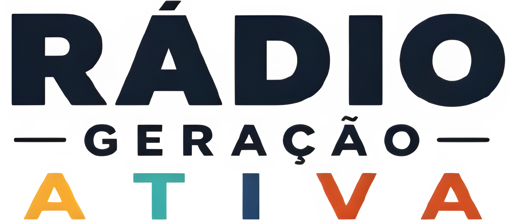

Propósito
Promover comunicação educativa de qualidade, desenvolvendo protagonismo estudantil, pensamento crítico e valores formativos por meio de conteúdos e projetos de comunicação.


RÁDIO GERAÇÃO ATIVA · UNASP SÃO PAULO
Notícias, vídeos e iniciativas criadas no ambiente estudantil do UNASP São Paulo.
01 / QUEM SOMOS
A Rádio Geração Ativa é um projeto de comunicação ligado ao UNASP São Paulo. Nele, os alunos participam da criação de conteúdos e desenvolvem novas formas de se expressar.
Por meio de textos, vídeos, notícias e iniciativas estudantis, a RGA aproxima a comunidade escolar e transforma a comunicação em uma experiência de participação, pensamento crítico e formação.
Promover comunicação educativa de qualidade, desenvolvendo protagonismo estudantil, pensamento crítico e valores formativos por meio de conteúdos e projetos de comunicação.
Ser referência em comunicação escolar como instrumento de aprendizagem, liderança e impacto positivo na comunidade educativa.
Ética e responsabilidade Criatividade Protagonismo juvenil Formação integral
02 / NOSSA ATUAÇÃO
A RGA funciona como uma metodologia ativa interdisciplinar, fortalecendo habilidades importantes para a formação dos alunos.
03 / QUADROS E CONTEÚDOS
A RGA reúne quadros e propostas de conteúdo em diferentes formatos de comunicação.
Um espaço de notícias sobre a escola, a comunidade e o mundo.
Quadro investigativo para analisar crenças populares, boatos da internet e fake news.
Espaço dedicado à moda cristã, abordando identidade, vestuário, modéstia e bom senso.
Voltado ao público infantil e pré-adolescente com foco em amizade, respeito e cooperação.
Momentos de reflexão, princípios de sabedoria e orientações práticas para as decisões do cotidiano.
Turismo educativo, geografia e cultura para você aprender a planejar viagens incríveis.
Conteúdos sobre esporte, com resultados, comentários e análises que valorizam o espírito esportivo.
Dicas e cuidados voltados para a saúde física, emocional e bem-estar geral.
Apresentação de projetos, iniciativas solidárias e ideias inovadoras construídas por alunos.
Mundo digital de forma simples: aplicativos úteis, novidades e segurança na internet.
Histórias curtas e narrativas marcantes trazendo lições de vida morais e espirituais.
Dicas práticas de estudos, técnicas de memorização, organização e preparação para provas.
04 / EQUIPE
Um projeto feito em conjunto, com orientação e participação estudantil.
DIRETORES EXECUTIVOS E COORDENAÇÃO
NÚCLEO CENTRAL DE PRODUÇÃO
05 / REDES
Acesse os canais oficiais da Rádio Geração Ativa.